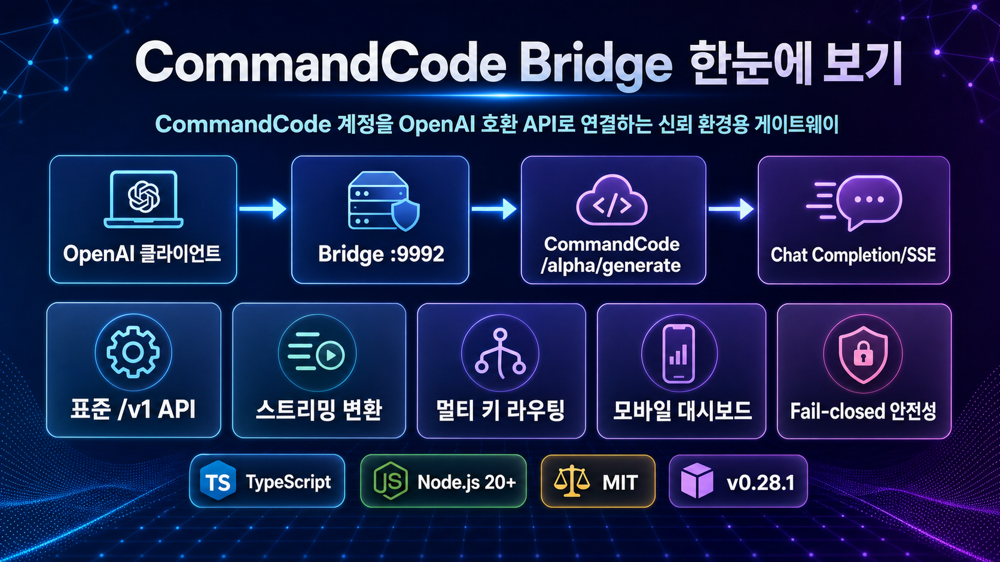

CommandCode Bridge
한눈에 이해하기
CommandCode 계정을 OpenAI 호환 API로 노출해, 기존 OpenAI 클라이언트가 `/v1/models`와 `/v1/chat/completions` 형식으로 CommandCode-backed 모델을 호출하게 해주는 신뢰 환경용 브리지입니다.
이 레포가 해결하는 문제
CommandCode를 직접 붙이기 어려운 환경에서, 익숙한 OpenAI API 표준으로 감싸 운영 부담을 줄입니다.
클라이언트 호환성
OpenAI-compatible 도구가 `/v1/chat/completions`를 그대로 호출할 수 있게 합니다.
요청마다 CLI 실행 없음
`cmd` 프로세스를 매번 띄우지 않고 upstream API 경로를 직접 호출해 응답을 정규화합니다.
운영자용 제어판
바인딩, 라우팅, 키, 모델 토글, 진단, 재시작을 모바일 우선 대시보드에서 관리합니다.
핵심 흐름
입력은 OpenAI 형식, 내부 처리는 CommandCode, 출력은 다시 Chat Completion/SSE 형태입니다.
좋아 보이는 기능
단순 프록시보다 “운영 가능한 브리지”에 가까운 구성이 눈에 띕니다.
멀티 키 라우팅
daily-burn, balance-priority, round-robin, drain-first 등 여러 credential 선택 정책을 제공합니다.
스트리밍·tool call 매핑
CommandCode streaming event를 OpenAI chunk로 바꾸고, tool call도 OpenAI `tool_calls` 형태로 되돌립니다.
Fail-closed 안전성
빈 visible output + `finish_reason: length` 상황을 빈 성공으로 넘기지 않고 기본적으로 오류 처리합니다.
설치/운영 선택지
Linux rootless installer, 수동 source 실행, Docker/Compose, systemd user service 흐름을 갖췄습니다.
프로젝트 성숙도 신호
작지만 문서·테스트·운영 스크립트가 고르게 포함되어 있습니다.
README, docs, install/uninstall, release 자료 포함
pygount 기준, TypeScript가 약 5,607 lines로 중심
auth, config, converter, router, dashboard, server 테스트 확인
Node.js 20+FastifyZodVitestDockersystemd user service
누구에게 유용한가
CommandCode를 이미 쓰고 있고, 내부망/개인 서버에서 OpenAI 호환 API로 붙이고 싶은 운영자에게 맞습니다.
추천
- OpenAI-compatible client를 CommandCode-backed 모델에 연결하려는 사람
- 로컬·LAN·VPN·tailnet처럼 신뢰 경계가 명확한 환경에서 쓸 사람
- 여러 CommandCode key를 정책 기반으로 나눠 쓰려는 운영자
먼저 확인
- CommandCode CLI/account 또는 upstream API credential이 필요함
- `/alpha/generate`가 alpha/internal 성격이라 upstream 변경 리스크가 있음
- 공개 인터넷 노출용 범용 프록시로 보기보다는 신뢰 환경용 브리지로 봐야 함
도입 판단
“CommandCode를 OpenAI API처럼 쓰고 싶다”가 목적이면 시도 가치가 높습니다.
단, 실제 도입 전에는 본인 CommandCode 계정의 credit/balance, 스트리밍 응답, tool call, 빈 응답 fail-closed 동작을 샘플 요청으로 확인하는 것이 좋습니다.
첫 테스트
`/health`와 `/v1/models`로 브리지 상태와 모델 목록 확인
실사용 테스트
non-streaming과 streaming chat completion을 둘 다 검증
운영 테스트
대시보드 저장, 재시작, credential redaction, 라우팅 정책 확인
분석 기준
GitHub 메타데이터, README/README.ko.md, package.json, src/tests 구조, pygount 코드 규모를 기준으로 빠른 의사결정용으로 정리했습니다.